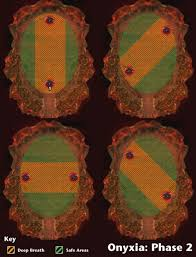

Onyxia in a Nutshell
Fight has three phases:
- Ground phase: Don't overaggro, watch tail, don't get knocked into whelps!
- Air phase: Spread, fireballs reset aggro! Dodge "Deep Breath" ability (see chart below)! Melee clear whelps!
- Ground phase: Wait for tank to get aggro, run to tank spot if you have aggro! Clear whelps!
P2: Deep breaths
By unknown author:

Green areas mark safe spots depending on Onyxia's position. Don't ever stand in the center!